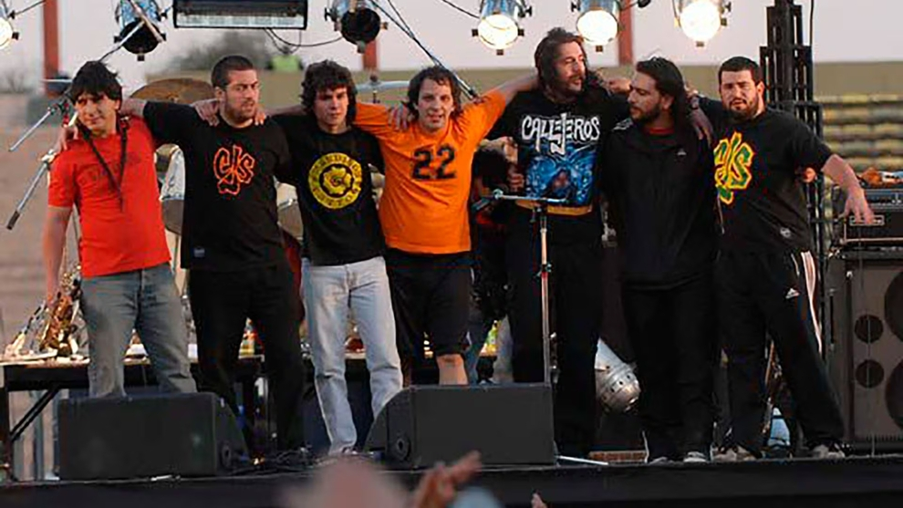

FUTBOL
Me gusta mucho el fútbol; es una de mis grandes pasiones. Disfruto ver partidos de distintas ligas, sin importar la hora o el lugar: siempre que hay un buen partido, me gusta estar atento. El equipo al que apoyo son los Tigres de la UANL. Me siento profundamente identificado con sus colores, su historia y, sobre todo, con la pasión de su afición. Una de las cosas que más me atrajo del equipo fue precisamente eso: el ambiente tan vibrante y colorido que se vive en cada partido. Asistir al Estadio Universitario es una experiencia que disfruto mucho. Me encanta estar en las tribunas, rodeado de gente que comparte la misma emoción, cantando, apoyando, y siendo parte de ese espíritu colectivo que hace único al equipo.

MUSICA
Otro de mis hobbies es la busqueda de música. Me gusta meterme a páginas como Soundcloud o Bandcamp para descubrir artistas nuevos, sobre todo aquellos que no son tan conocidos. A veces encuentro propuestas muy buenas que no suenan en ningún otro lado. Mi género favorito es el rock en español, me gusta por su estilo y por las letras, que muchas veces dicen cosas con las que me identifico. Aun así, trato de no quedarme solo con un tipo de música. Escucho otros géneros también, porque creo que conocer distintos estilos ayuda a abrir la mente y te hace crecer, tanto personalmente como en lo creativo.
LECTURA
Últimamente he empezado a tomar la costumbre de leer por las noches. Es algo nuevo para mí, pero me está gustando mucho. Me he dado cuenta de que disfruto bastante los libros de fantasía, true crime y ciencia ficción, porque me transportan a mundos diferentes o me mantienen intrigado con historias interesantes. Además de los libros, también me gusta leer blogs y páginas sobre temas que me llaman la atención, como los deportes o la tecnología. Aunque todavía estoy acostumbrándome a hacer de la lectura una rutina, siento que poco a poco se está volviendo un momento que disfruto mucho al final del día.